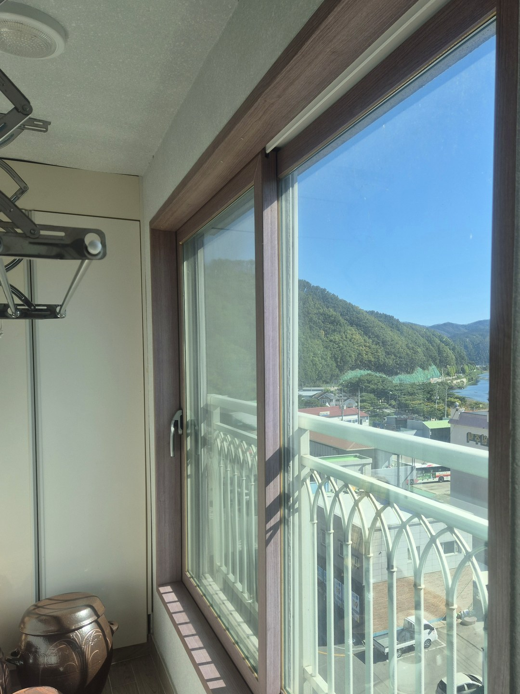
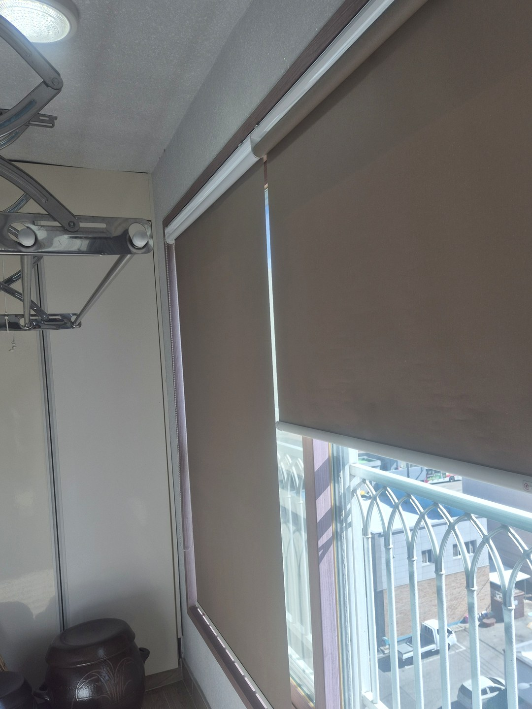
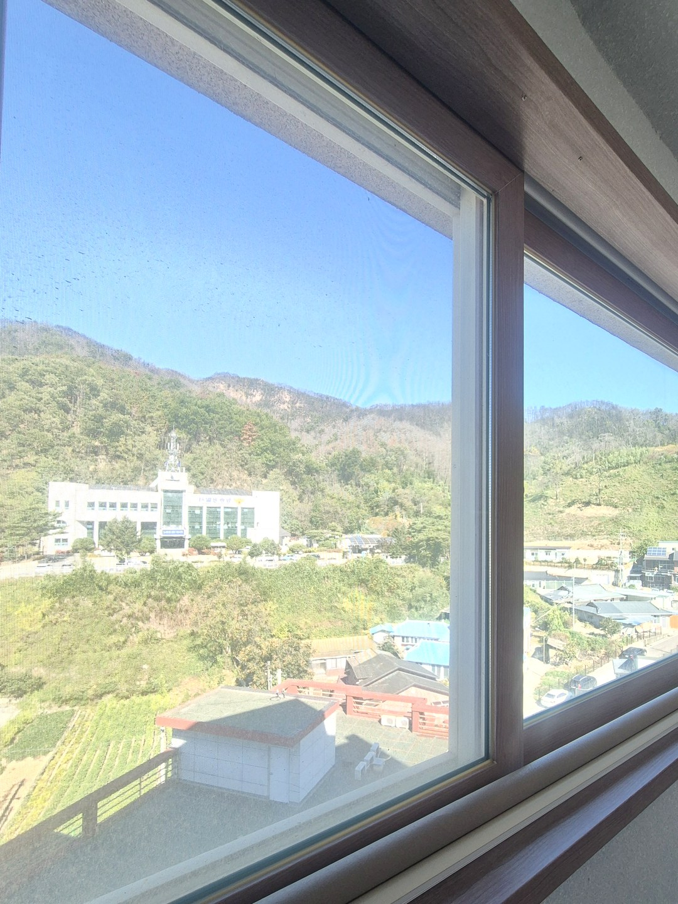
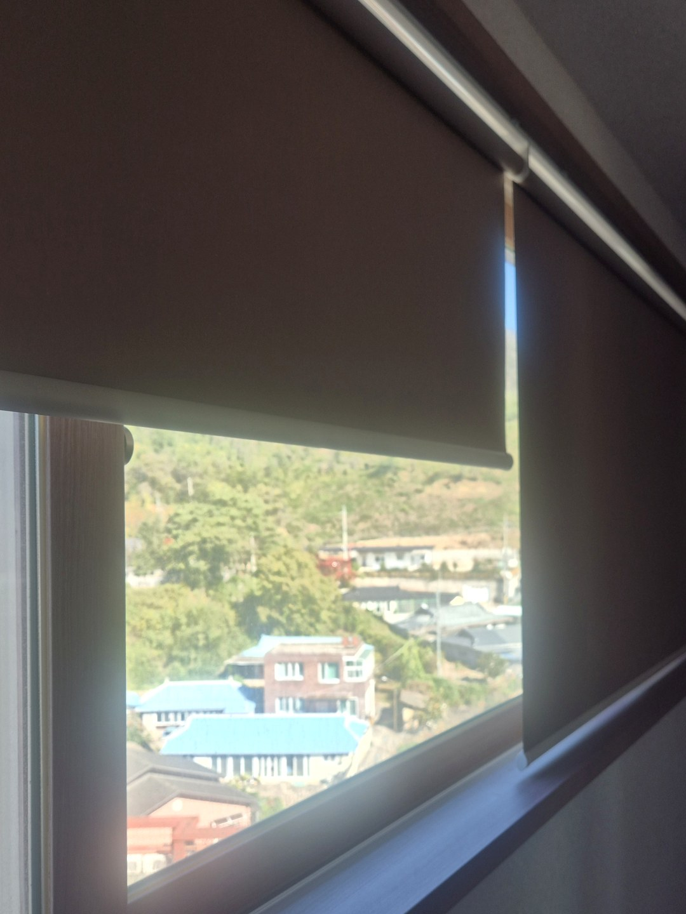
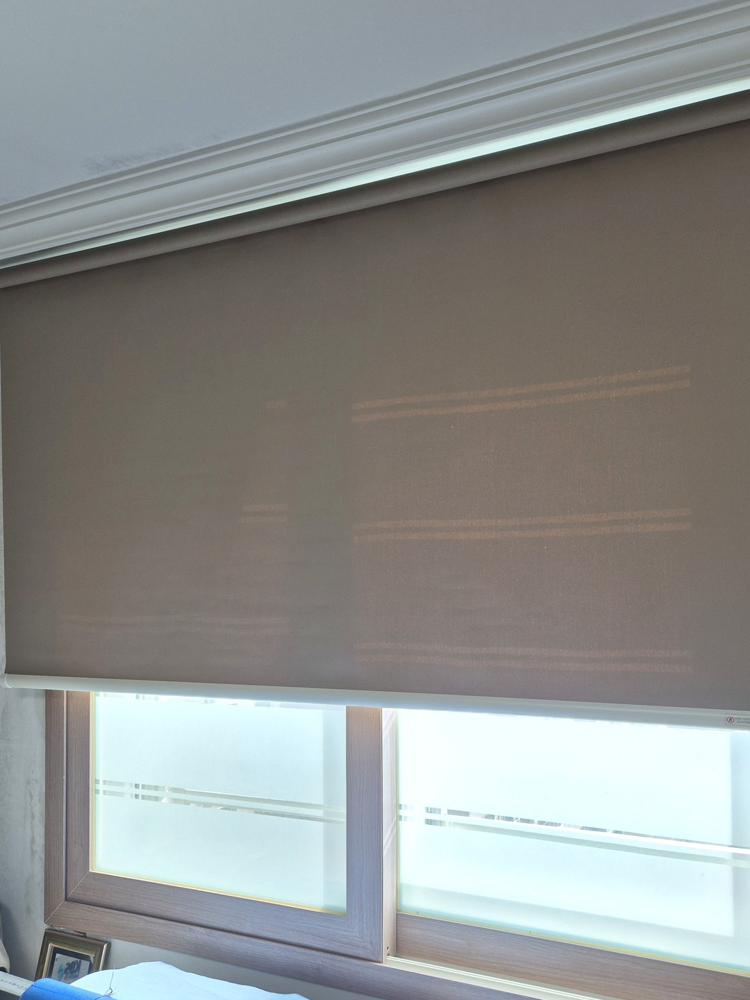
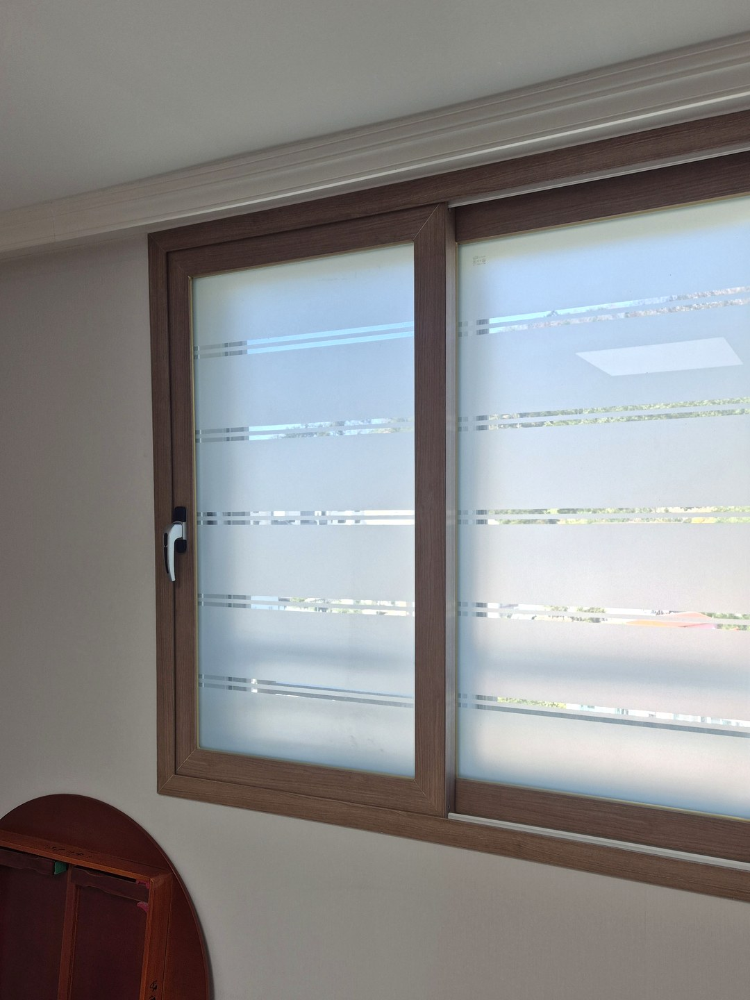
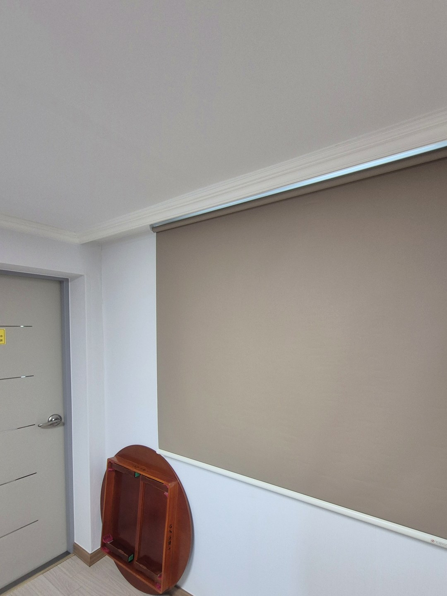
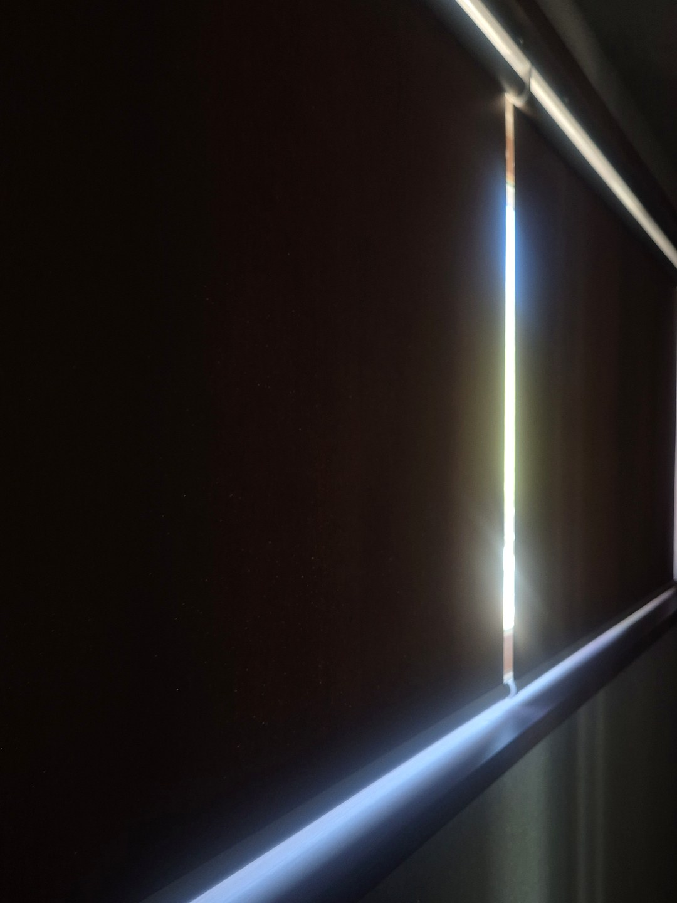

2026년 10월 7일 시공
청송 솔기아파트
암막 롤스크린 시공후기

청송 솔기아파트에 암막 롤스크린을 설치했습니다.
어머님이 혼자 지내시는 집이고, 따로 사시는 자녀분이 의뢰해 주셨습니다.
설치한 곳은 안방 베란다, 주방 베란다, 작은방 두 곳까지 모두 네 군데입니다.
고른 기준 — 쓰실 분이 편한 것
이번 일은 고르는 분과 쓰시는 분이 달랐습니다.
그래서 매일 창을 만지실 어머님 기준으로, 동작이 하나뿐인 롤스크린을 골랐습니다.
줄을 당기면 원단이 감겨 올라가고, 놓으면 그 높이에 멈춰 있습니다.
원단을 양옆으로 끌어 모으는 커튼보다 손에 걸리는 무게가 적습니다.
베란다 두 곳


한 곳은 난간 너머로 산이 보이는 베란다였습니다.
다 내리면 창 전체가 원단 한 장으로 덮이고, 반만 내려 두면 아래 난간 쪽이 트입니다.


다른 베란다는 앞이 막힌 데 없이 트인 창입니다.
해가 들면 베란다 안까지 그대로 들어와서, 위쪽만 가려 두는 높이가 쓸모 있습니다.
작은방 두 곳 — 창틀 위에 달기

작은방 롤스크린은 창틀 위 벽에 달아 창보다 조금 넓게 덮었습니다.
원단이 위아래로만 움직이기 때문에, 창 앞에 물건이 놓여 있어도 걸리지 않습니다.


네 곳 모두 같은 갈색 계열 원단에 같은 방식입니다.
어느 방에 들어가셔도 여닫는 법이 같다는 것이 이 집에서는 가장 중요했습니다.
미리 알아 두실 점 — 가장자리 빛

원단이 암막이어도, 롤스크린은 감겨 올라가는 구조라 양옆과 위에 틈이 남습니다.
끝까지 내린 사진에서 가장자리로 보이는 빛줄기가 그 틈입니다.
방을 아주 깜깜하게 해야 한다면 커튼을 함께 쓰는 방법이 있지만, 그만큼 여닫는 일이 늘어납니다.
이번 집은 쉽게 쓰시는 것이 먼저라 롤스크린 한 겹으로 정했습니다.
부모님 댁을 맡기실 때
자녀분이 연락하시고 실제로는 부모님이 쓰시는 집이라면, 창 사진을 먼저 보내 주십시오.
크기와 다는 자리를 미리 보고 방문하면 집에서 머무는 시간도 짧아집니다.